응용지질기사 (2006-03-05 기출문제)
1과목: 암석학 및 광물학
1. 다음 중 석영이 속하는 결정계는?
- 등축정계
- 정방정계
- 육방정계
- 사방정계
(정답률: 50%)

2. 주상의 벽개를 보이는 대표적인 광물은?
- 금홍석
- 방해석
- 방연석
- 형석
(정답률: 62%)
3. 루비와 사파이어는 다음중 어느 광물에 속하는가?
- 강옥
- 루비는 석류석, 사파이어는 녹주석
- 석영
- 황옥
(정답률: 88%)
4. 비슷한 크기의 양이온 또는 음이온을 가지고 있으며 동일한 결정구조를 갖는 광물들 사이의 관계를 무엇이라 하는가?
- 동질이상
- 유질동상
- 동질동상
- 유질이상
(정답률: 55%)
5. 다음 광물중 결손고용체에 속하는 것은?
- 자철석
- 자황철석
- 유비철석
- 황동석
(정답률: 34%)
6. 정방정계에 있어서 (001) - (011) = 60° 일때 축률은 얼마인가?
- a : c = 1 : 0.577
- a : c = 0.577 : 1
- a : c = 1 : 1.732
- a : c = 1.732 : 1
(정답률: 58%)
7. 다음 중 붕소(F)를 함유하는 광물은?
- 각섬석
- 금운모
- 규선석
- 전기석
(정답률: 알수없음)
8. 광석 현미경 하에서 직교니콜을 하였을때 관찰할수 없는것은?
- 이방성
- 간섭색
- 간섭상
- 다색성
(정답률: 63%)
9. 6면체상 배위다면체의 경우, 양이온 주위를 둘러싸고 있는 음이온의 수는?
- 4
- 6
- 8
- 12
(정답률: 34%)
10. 광물을 분류하는 방법은 분류의 도구로서 무엇을 사용하느냐에 따라 여러 가지가 있을수있다. 광물의 화학조성에 기초를 둔 화학적 분류법으로 분류한 광물의 분류와 대표적인 광물이 틀리게 조합된 것은?
- 황산염 광물 : 황철석, 휘은석, 섬아연석
- 할로겐광물 : 소금, 형석, 빙정석
- 산화광물 : 자철석, 크롬철석, 적철석
- 탄산염광물 : 마그네사이트, 능철석, 능망간석
(정답률: 43%)
11. 지하의 온도와 압력에 따른 변성상의 분포를 나타낸 그림에서 A영역에 해당하는 변성작용과 이에 해당하는 암석의 예를 바르게 나타낸 것은? (단, B는 물로포화된 현무암의 용융곡선이고, G는 물로 포화된 화강암의 용융온도 곡선이다.)
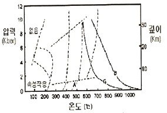
- 접촉변성작용, 혼펠스
- 광역변성작용, 편마암
- 광역변성작용, 천매암
- 파쇄변성작용, 압쇄암
(정답률: 67%)
12. 오피올라이트와 가장 관련이 깊은 것은?
- 칼크알카리 안산암
- 처트나 원양성 퇴적암
- 화성탄산염암
- 구과상 화강암
(정답률: 64%)
13. 초변성 작용을 받은 기존 암석이 선택적으로 재용융 하여 생긴 액체와 고체의 혼합물을 무엇이라 하는가?
- 미그마
- 미화강암
- 반화강암
- 아다멜라이트
(정답률: 70%)
14. 화성암에서 산성암들이 갖는 공통적 특징이 아닌 것은?
- MgO, FeO, Fe2O3 성분이 적어 유색광물이 적다.
- 무색광물이 많아 색깔이 옅다.
- 염기성암 보다 낮은 온도에서 주로 형성된다.
- K2O, Na2O, CaO 성분이 많아 비중이 낮다.
(정답률: 알수없음)
15. 퇴적물이 퇴적된 이후에 받는 모든 물리적, 무기화학적, 생화학적인 변화를 총칭해서 말하는 것은?
- 분화작용
- 변성작용
- 속성작용
- 풍화작용
(정답률: 60%)
16. 다음중 화성암을 육안으로 감정하는데 가장 도움이 되지 않는 것은?
- 색
- 비중
- 조암광물의 종류와 함량비
- 암석의 조직
(정답률: 78%)
17. 남정석, 홍주석, 규선석은 모두 다음중 어느것의 동질이상인가?
- SiO2
- Fe2O3
- Al2SiO5
- Mg2SiO4
(정답률: 60%)
18. 다음 용어중에서 퇴적암과 관련이 적은것은?
- 구과
- 결핵체
- 건열
- 다이아스템
(정답률: 39%)
19. 석회암이나 염기성 화성암에 화강암이 관입하면 접촉대에서 교대작용이 일어나서 스카른 광물이 생성된다. 다음중 스카른 광물에 해당하지 않는 것은?
- 석류석
- 투휘석
- 규회석
- 형석
(정답률: 54%)
20. 다음중 화성암에서 분출암과 관입암을 구별하는 기준은?
- 광물조성
- 조직
- 화학성분
- 경도
(정답률: 67%)
2과목: 구조지질학
21. 평행 수계에 대한 설명 중 틀린 것은 어느 것인가?
- 암석의 성분이 같고, 균일한 경사를 가진 곳에서 많이 발달한다.
- 주류는 일반적으로 단층이나 주요 단열구조를 나타낸다.
- 주류 와 지류는 거의 같은 각을 이루면서 만난다.
- 주로 고립되어 있는 산 또는 돔 지형에서 나타난다.
(정답률: 92%)
22. 바람의 풍반작용 과 마모작용을 통해 만들어진 지형이 아닌 것은?
- 사막포장
- 야당
- 사구
- 풍반 골짜기와 구덩이
(정답률: 75%)
23. 캘리포니아 산안드레아스 단층은 어떤 종류의 판 경계부인가?
- 발산경계
- 수렴경계
- 변환단층경계
- 충돌경계
(정답률: 57%)
24. 다음 중 구성광물의 소성변형과 관련이 있는 암석은?
- 단층각력암
- 현무암
- 압쇄암
- 슈도타킬라이트
(정답률: 47%)
25. 퇴적암에 대한 설명 중 잘못된 것은?
- 물밑에 지층이 쌓이는 면을 퇴적면 또는 성층면 이라 한다.
- 퇴적암의 특징은 층리를 갖고 있는 것이다.
- 빙하퇴적물중 빙퇴석은 층리가 많은 표석 점토층을 형성한다.
- 바다 밑바닥을 흘러내린 흙탕물을 저탁류라고 한다.
(정답률: 알수없음)
26. 취성전단대(brittle shear zone)의 특징이 아닌 것은?
- 단층각력을 가진다.
- 같은방향의 단층들이 존재한다.
- cataclasite가 존재한다.
- Mylonite
(정답률: 65%)
27. 우리나라 선캠브리아기의 기저암은 다음 중 어느 것에 해당하는가?
- 플래이트(plate)
- 돔(dome)
- 플래트폼(platform)
- 분지(basin)
(정답률: 77%)
28. 다음 지질도에서 cupola에 해당하는 부분의 기호는?
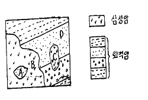
- A
- B
- C
- D
(정답률: 45%)
29. 다음 중 지진발생과 가장 관련이 적은 것은?
- 액화현상(liquefaction)
- 압쇄암(mylonite)
- 쓰나미(tsunami)
- 단층운동(faulting)
(정답률: 80%)
30. 일반적으로 지각의 10km 상부에서는 취성 변형이, 10km 하부에서는 연성 변형이 발생한다고 한다. 10km 심도의 대륙지각의 하중에 의한 수직응력은 대략 어느 정도인가? (단. 화강암질암의 밀도는 2700kg/m3, 중력가속도는 10m/s2)
- 100MPa
- 270MPa
- 500MPa
- 750MPa
(정답률: 93%)
31. 다음 중 신장절리의 특징이라고 볼 수 없는 것은?
- 절리간격이 비교적 일정하다.
- 공맥상으로 발달한다.
- 절리면이 거칠고 암질에 따라 발달 정도가 다르다.
- 경사가 수직에 가깝고 연장성이 양호하다.
(정답률: 86%)
32. 다음 중 비정합을 이루는 조건 둘 맞는 것은?
- 부정합면 아래 심성암이 있다.
- 부정합면 아래 지층과 위의 지층의 성층면이 서로 평행하다.
- 부정합면 아래 지층이 많은 침식을 받았다.
- 부정합면 아래 변성암이 분포된다.
(정답률: 알수없음)
33. 유리질 또는 은미정질조직을 가진 맥상이며, 지하 10~15km 이내의 깊이와 건조한 조건하에서 단층작용에 의하여 부분 용융되어 형성된 것은?
- 각력암
- 파쇄암
- 슈도타킬라이트
- 압쇄암
(정답률: 44%)
34. 풍화작용에 영향을 미치는 요인이 아닌 것은?
- 암석의 종류와 지질구조
- 시간
- 기후
- 암석의 연령
(정답률: 65%)
35. 내프구조의 증거는 다음 중 어느 것인가?
- 기저역암
- Fenster와 klippe
- 조선
- 포획암
(정답률: 73%)
36. 다음 중 해수면 변동이나 지각변동의 증거로 볼 수 없는 것은?
- 성장단층의 발달
- 심성암과 변성암의 노출
- 해안단구
- 융기해빈
(정답률: 50%)
37. 해령에서 800km떨어진 곳에서 시추한 용암의 K-Ar 연령이 약 1⑤0만년이다. 판구조운동의 속도가 일정하다고 가정했을때 해저확장속도는?
- 7.6cm/year
- 7.6mm/yaer
- 13cm/year
- 13mm/year
(정답률: 88%)
38. 사면붕괴를 발생시키는 원인 중 가장 영향이 적은 것은?
- 지질구조
- 공극수압
- 중력
- 암석을 구성하는 광물
(정답률: 42%)
39. 다음의 층 중에서 영월층 조선 누층군이 아닌 것은?
- 회절층
- 문곡층
- 영흥층
- 삼방산층
(정답률: 28%)
40. 규암층(짙은부분)의 지질도를 작성하여 얻은 지질 분포도이다. 맞는 설명은?
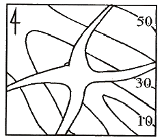
- 경사습곡
- 북동 남서 방향선 주향의 수평 습곡축
- 배사 습곡
- 부정합
(정답률: 71%)
3과목: 탐사공학
41. 중력탐사에서 중력 측정값의 보정에 관한 설명으로 틀린 것은?
- 프리-에어 보정은 해수준면으로부터 1m 상승함에 따라 0.3086 mGal씩 중력 측정값에서 빼준다.
- 중력측점이 해수준면상에 있으면 프리-에어 보정은 필요없다.
- 부게보정은 중력 측정값에 포함된 기준면 위쪽의 초과 질량 영향을 제거하기 위한 것이다.
- 중력 측정시 0.1 mGal의 정확도를 유지하기 위해서는 125m의 오차이내에서 측점의 수평적 위치가 결정되어야 한다.
(정답률: 54%)
42. 자장의 강도를 H, 전장의 강도를 E, 자속밀도를 B, 전기적 변위를 D, 전류밀도를 j, 투자율을 μ, 전기전도도를 σ, 시간을 t라 할 때 다음 관계식 중 틀린 것은?
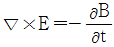
- j = σE
- D = μE
- B = μH
(정답률: 40%)
43. 토양층 중 B층에 대한 설명으로 틀린 것은?
- 적갈색, 황갈색, 암회색 등의 색을 띤다.
- 주로 철산화물이나 점토광물이 집적된 층이다.
- 미량원소들이 농축되는 경우가 많으므로 지구화학탐사의 대상층이 된다.
- 기반암이 풍화된 암석 파편이 존재하는 층이다.
(정답률: 알수없음)
44. 핵자력계(proton-precession magnetometer)는 다음 중 어느 것을 이용한 것인가?
- 세차운동
- 항자력
- 소자력
- 원심력
(정답률: 86%)
45. Slingram 법과 밀접한 관련이 있는 물리탐사는?
- Horizontal Loop EM method
- Magnetic method
- VLF-EM method
- I.P method
(정답률: 59%)
46. 광상의 종류에 따른 지시원소 중 지기원소가 B였다면 광상의 종류는?
- Pb-Zn-Ag 광상
- 반암동 광상
- Au-Ag 광상
- Sn-W-Be-Mo 광상
(정답률: 74%)
47. 수평 2층에 대한 탄성파 굴절법 탐사에서 다음과 같은 주시곡선을 얻었을 때 1층의 두께(Z)를 바르게 나타낸 것은? (단, V1, V2는 1층과 2층의 전파속도)
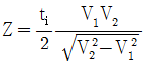
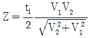
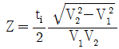
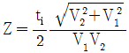
(정답률: 74%)
48. 다음 중 유도분극(induced polarization)현상의 발생 원인이 아닌 것은?
- 과전압
- 막분극
- 전극분극
- 자기유도
(정답률: 30%)
49. 밀도 검층은 γ선의 작용을 이용하여 암석의 체적밀도를 측정한다. 이 때 이용되는 γ선의 작용은 무엇인가?
- 쌍 생산
- 쌍 소멸
- 콤프턴 산란
- 광전 효과
(정답률: 82%)
50. 굴절법과 비교한 반사법 탄성파 탐사의 장점을 기술한 것 중 틀린 것은?
- 굴절법에 비해 해상도가 높다.
- 같은 소스(source)를 파원으로 사용하는 경우 깊은 심도까지 탐사가 가능하다.
- 굴절법과 비교하여 탐사 측선이 짧다.
- 굴절법에 비해 데이터 처리가 간단하다.
(정답률: 50%)
51. 유정 탐사에 중요한 것으로 사암 등과 같은 투수성 지층을 판별하고, 이들과 셰일층과 경계를 파악하고자 할 때 주로 사용되는 검층은?
- 전기비저항 검층
- 저자유도 검층
- 유도분극 검층
- 자연전위 검층
(정답률: 70%)
52. 다음은 지진파 초동분포양상을 연구하기 위한 발진기구(focal mechanism)이다. 가장 적합하지 않는 것은?
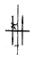
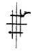
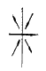
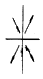
(정답률: 55%)
53. 지표 탄성파탐사에서 주로 사용되는 주파수 범위는?
- 0.1 ~ 1Hz
- 10 ~ 100Hz
- 100 ~ 1000Hz
- 1000Hz 이상
(정답률: 50%)
54. 수심이 100m인 해저(海底)에서 중력(重力)을 측정했을 시 부우게 보정치(Bouguer correction)는 몇mgal인가? (단, 기준면(Datum plane)은 해수면(海水面)으로 하고, 바닷물의 밀도는 1g/cm3이고, 중력상수는 6.67 × 10-8 CGS로 하여 계산할 것)
- 4.19
- 8.37
- 9.8
- 19.8
(정답률: 28%)
55. 다음 그림과 같은 웨너(Wenner)전극배열법에 의한 외견 비저항 값으로 맞는 것은? (단, Π = 3.14, P1, P2 간의 전위차 △V = 1000mV)
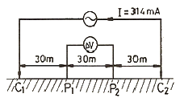
- 300 Ω-m
- 600 Ω-m
- 900 Ω-m
- 1200 Ω-m
(정답률: 70%)
56. 자기장의 영년 변화의 원인이 되는것은 어느 것인가?
- 자기폭풍
- 태양에서 나오는 자외선이나 X-선
- 달의 인력
- 맨틀이나 외핵의 운동
(정답률: 70%)
57. 탄성파탐사는 크게 굴절법탐사와 반사법탐사로 나누어진다. 굴절법탐사에서 주로 사용하는 파는 다음 중 어느것인가?
- 선두파 (Head wave)
- 레일리파 (Rayleigh wave)
- 러브파 (Love wave)
- 다중반사파 (Multiple reflections)
(정답률: 50%)
58. 다음 중 자연잔류자화의 종류에 대한 설명으로 틀린 것은?
- 등온 잔류자화는 일정한 온도 하에서 짧은 시간동안만 존재하고 사라지는 외부자기장에 의해 발생한다.
- 열 잔류자화는 큐리온도 이상의 높은온도에서 외부 자기장에 의해 발생한다.
- 퇴적 잔류자화는 세립질 물질이 퇴적되면서 발생한다.
- 점성 잔류자화는 암석이 약한 외부자기장을 오랫동안 받아서 발생한다.
(정답률: 69%)
59. 지표 또는 지하의 물질에 함유된 지시원소를 분석하여 광상을 탐사하는 방법을 무엇이라 하는가?
- 지표지질조사
- 지구화학탐사
- 지구물리탐사
- 지구물리검층
(정답률: 78%)
60. 물리탐사에서 널리 수행되는 역산(inversion)에 대한 가장 올바른 설명은?
- 주어진 모델변수(지하 물성분포)로부터 이론자료를 얻는 과정이다.
- 현장자료부터 모델변수를 얻는 과정이다.
- 모델변수와 현장자료 사이의 상관관계를 얻는 과정이다.
- 모델변수의 변화에 대한 이론자료의 변화량을 계산하는 과정이다.
(정답률: 82%)
4과목: 지질공학
61. 다음 중 공극률은 크지만 투수성이 가장 낮은 퇴적물은 무엇인가?
- 점토
- 미사
- 모래
- 자갈
(정답률: 64%)
62. 어떤 암석의 포화단위중량은 30kN/m3, 건조단위중량은 28kN/m3인 경우 공극률은 얼마인가? (단, 물의 단위중량은 10kN/m3로 한다.)
- 5%
- 10%
- 15%
- 20%
(정답률: 62%)
63. 암반 불연속면의 특징을 표현하기 위한 기재사항이 아닌 것은?
- 초기응력
- 방향
- 간극
- 간격
(정답률: 43%)
64. 다음의 흙 가운데 일반적으로 자연 상태 함수량이 가장 높은 것은?
- 모래
- 유기질흙
- 점토
- 자갈
(정답률: 56%)
65. 표준관입시험 결과 얻어진 N치(N vaule)에 대한 설명 중 틀린 것은?
- N치가 클수록 내부 마찰각이 크다.
- N치가 클수록 공극률이 크다.
- N치가 클수록 압축강도가 크다.
- N치가 클수록 연경도(consistency)가 증가한다.
(정답률: 46%)
66. 암반의 기본 RMR 값이 75인 터널에서 불연속면이 작업막장면에서 작업장 쪽으로 30도 정도 경사져 있다. 터널에서 불연속면의 방향에 대한 보정 값은 다음 표와 같다. 이때 이 터널의 RMR 값은 얼마인가?
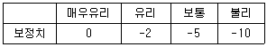
- 65
- 70
- 73
- 75
(정답률: 36%)
67. 점토질의 흙이 자중으로 인하여 유동할 때 최소의 함수비를 무엇이라 하는가?
- 액성한계
- 소성한계
- 수축한계
- 인성한계
(정답률: 40%)
68. 지형의 특성에 따라 충적층을 다음과 같이 구분할 때 일반적으로 충적층의 두께가 가장 두꺼운 지층은?
- 선상지
- 해안평야
- 범람원
- 곡간평야
(정답률: 알수없음)
69. 현장 암반 시험법 중에서 초기지압(in-situ stress)을 측정하기 위한 시험법이 아닌 것은?
- 수압파쇄법(hydrofracturing method)
- 응력해방법(stress relief method)
- 공내재하시험법(dilatometer test)
- 응력보상법(stress recovering method)
(정답률: 알수없음)
70. 다음 중 지하수의 가압층으로 적당하지 않은 것은?
- 준대수층
- 주수대수층
- 난대수층
- 비대수층
(정답률: 47%)
71. 지반의 강도를 증가시키고, 용수와 누수를 방지하기 위해 지반 속에 응결제를 넣어 고결시키는 공법은?
- 프리 로딩 (pre-loading)
- 샌드 드레인(sand drain)
- 주입공법(grouting)
- 웰포인트(well point)
(정답률: 73%)
72. 주상절리가 발달된 암반사면에서 발생되기 쉬운 붕괴 형태는?
- 평면붕괴(plane slide)
- 회전붕괴(rotational slide)
- 전도붕괴(toppling slide)
- 슬랩붕괴(slab slide)
(정답률: 71%)
73. 두께 10m의 점토층이 20t/m2의 하중을 받았을 때 최종침하량이 3cm이었다면, 이 층의 체적변화계수는 얼마인가?
- 1.5×10-3cm2/g
- 1.5×10-6cm2/g
- 6.5×10-3cm2/g
- 6.5×10-6cm2/g
(정답률: 39%)
74. 다음은 절리의 성인에 따른 설명이다. 잘못된 설명은?
- 전단절리를 따라 존재하는 물질이 인장절리를 따라 존재하는 물질보다 변질되지 않는다.
- 전단파괴에 의한 절리면에는 암석파편이 많이 존재한다.
- 인장파괴에 의해 형성된 절리면은 거친 경향이 있다.
- 절리의 발생빈도는 층리두께에 반비례 한다.
(정답률: 29%)
75. 다음은 풍화에 따른 암석의 물리적̇•역학적 변화를 설명한 것이다. 틀린 것은?
- 풍화작용을 받은 암석의 탄성파속도는 줄어든다.
- 풍화가 심할수록 영율(young's modulus)은 낮아진다.
- 풍화가 진행되면 인장강도는 줄어든다.
- 풍화가 진행되면 투수율이 낮아진다.
(정답률: 70%)
76. 유선망에 대한 설명으로 틀린 것은?
- 등수선과 유선은 항상 직각이다.
- 인접한 두 유선 사이를 흐르는 유량은 일정하다.
- 유선 사이의 거리가 넓어지면 유속이 빨라진다.
- 인접한 두 등수두선 사이의 수두손실은 동일하다.
(정답률: 73%)
77. 화강암에서 기계적 풍화가 발생하기 위한 조건으로 적당하지 않은 것은?
- 겨울에 온도가 영화로 떨어진다.
- 밤, 낮의 온도차가 크다.
- 비가 자주 내린다.
- 응력해방에 따라 절리 발달이 촉진된다.
(정답률: 63%)
78. 다음 중 불안정한 사면의 안전율을 증가시킬 목적으로 사용되는 안정공법, 혹은 억지공법에 해당되지 않는 것은?
- 사면의 경사를 완만하게 조정
- 활동가능 토괴의 전부, 혹은 일부를 제거
- 록앵커, 옹벽, 네일링, 억지말뚝 등의 설치
- 생물화학적 방법에 의한 식생보호공
(정답률: 79%)
79. 다음 중 암반분류법의 일종인 Q-system의 구성요소가 아닌 것은?
- 암질지수
- 절리군의 수
- 현장 응력조건
- 절리면 압축강도
(정답률: 19%)
80. 단위중량 1.8t/m3, 점착력 3t/m2,내부 마찰각 15°인 지반에서 안전율을 1로 하여 수직으로 굴착할 수 있는 최대 깊이는 얼마인가? (단, 파괴는 평면파괴를 가정한다.)
- 6.7m
- 7.7m
- 8.7m
- 9.7m
(정답률: 37%)
5과목: 광상학
81. 후생광상(Epigenetic deposit)이 형성되기 전에 광화용액이 침투하기 쉽고, 침전하기 좋은 여건을 마련해주는 전위적인 작용을 무엇이라 하는가?
- 속성작용
- 광화준비작용
- 모암변질작용
- 스카른화작용
(정답률: 알수없음)
82. 접촉교대광상에 속하지 않는 광상은?
- 연화 연-아연광상
- 상동 중석 광상
- 왕피리 석 광상
- 금성 휘수연광상
(정답률: 56%)
83. 다음 중 반암동광상과 관계가 없는것은?
- 주요한 광상 생성시기는 중생대 및 신생대이다.
- 광물조합은 Cu-Mo-Au로 특징된다.
- 성인적으로 중성-산성 관입암체와 밀접히 관련된다.
- 이 광상의 변질대 중심부는 점토화변질대(이질변질대)가 특징적이다.
(정답률: 70%)
84. 모암(母岩)이 안산암(安山岩) 또는 석영안산암(石英安山岩)일때 열수 광상 주변에서 관찰되는 주요 모암변질작용은?
- 견운모화 작용(sericitization)
- 프로피라이트화 작용(propylitization)
- 그레이젠화 작용(greisenization)
- 전기석화 작용(tourmalinization)
(정답률: 6%)
85. 탄탈륨(Ta), 리튬(Li), 베릴륨(Be) 등의 희원소 광물이 집중하는 광상은 다음 중 어느 것인가?
- 화성광상
- 페그마타이트광상
- 열수광상
- 변성광상
(정답률: 67%)
86. 암층의 지질시대를 대비하는데 이용되지 않는 것은?
- 표준화석
- 건층
- 시상화석
- 부정합
(정답률: 65%)
87. 단일 광상중에 여러 광종이 공생하는 경우 이들을 근거로 하여 추정이 불가능한 것은?
- 지질 온도
- 광물의 생성순서
- 광상의 생성시기
- 광화작용의 단계
(정답률: 알수없음)
88. 접촉교대광상의 모암으로서 가장 적합한 것은?
- 사암
- 역암
- 석회암
- 셰일
(정답률: 알수없음)
89. 다음은 우리나라 납석광상에 대한 설명이다. 맞는것은?
- 국내 납석광상이 백악기 유천층군 화산암류 분포지내에 집중적으로 산출되는 것은 백악기 화산활동과 성인적 관련성이 크기 때문이다.
- 국내 납석광상의 주요 분포지는 충남∙북과 강원도 일원이다.
- 국내 대부분의 납석광상은 대체적으로 풍화광상에 속한다.
- 국내 납석광상에서는 특징적으로 연-아연 광물들이 흔히 수반된다.
(정답률: 알수없음)
90. 반상화강암체의 정상부 또는 주변에서 유용광물을 광염 또는 망상으로 산출하는 대표적인 저품위 대규모의 광상은?
- 화산성 괴상 황화물광상
- 반암형광상
- 증발광상
- 풍화잔류광상
(정답률: 10%)
91. 석탄화 과정에서 성분의 변화가 관찰되는 석탄의 주구성 물질에 해당되지 않는 것은?
- 회분
- 고정탄소
- 수분
- 알루미나
(정답률: 79%)
92. 다음 중 열수광상에서 관찰되는 모암 변질과 관계없는 것은?
- 녹주석
- 명반석
- 녹니석
- 고령토
(정답률: 16%)
93. 다음은 우리나라 석탄층 분포와 관련이 있는 평안계 지층들이다. 이중 가장 상부에 존재하는 지층은?
- 홍점통
- 사동통
- 고방산통
- 녹암통
(정답률: 50%)
94. 다음 중 우리나라에서 반암동 광상이 보고된 지역은?
- 경기변성지역
- 경상분지지역
- 음성분지지역
- 태백산 지역
(정답률: 알수없음)
95. 다음 설명 중 틀린 것은?
- 칠레초석과 초석은 대표적인 질산염 광물이다.
- 칼리염 광상은 주로 고생대말의 폐름기 에 생성되었다.
- 명반석류 광상은 열수변질광상으로 생성된다.
- 칼리염 광상은 주로 풍화잔류광상으로 생성된다.
(정답률: 47%)
96. 다음 중 구로꼬형 광상과 관련이 없는 설명은?
- 제3기에 형성된 광상이다.
- 이 광상형의 이름은 일본의 구로꼬 광산에서 유래되었다.
- 이 광상은 고유황광상과 저유황광상으로 구분된다.
- 방연석, 섬아연석, 황동석 등의 황화광물이 우세하게 산출된다.
(정답률: 28%)
97. 다음 중 광맥광상(맥상광상)의 유체포 유물 연구로서 알 수 없는 것은?
- 광상의 생성온도
- 염농도
- 포유물의 화학성분
- 광상형성시기
(정답률: 62%)
98. 단층발달구역에 대한 지질조사를 시행하려고 한다. 구조규제형 열수 복합광맥광상의 야외조사 시 구조선을 중심으로 외측으로의 발달이 예상되는 금속성분의 분포 조합은?
- 연∙아연 → 동 → 동∙주석 → 텅스텐
- 동∙주석 → 연∙아연 → 텅스텐 → 금∙은
- 주석∙텅스텐 → 동∙주석 → 동∙아연 → 연∙아연
- 동∙아연 → 주석∙텅스텐 → 수은 → 금∙은
(정답률: 50%)
99. 표성부화광상의 산화부화대에서 산출하는 광물은?
- 휘동석
- 공작석
- 휘은석
- 섬아연석
(정답률: 20%)
100. 주요 산업원료광물(비료,화학공업용) 등으로 사용되는 인광상(guano)의 성인으로 적합한 것은?
- 정마그마광상
- 기성광상
- 퇴적광상
- 천열수광상
(정답률: 53%)